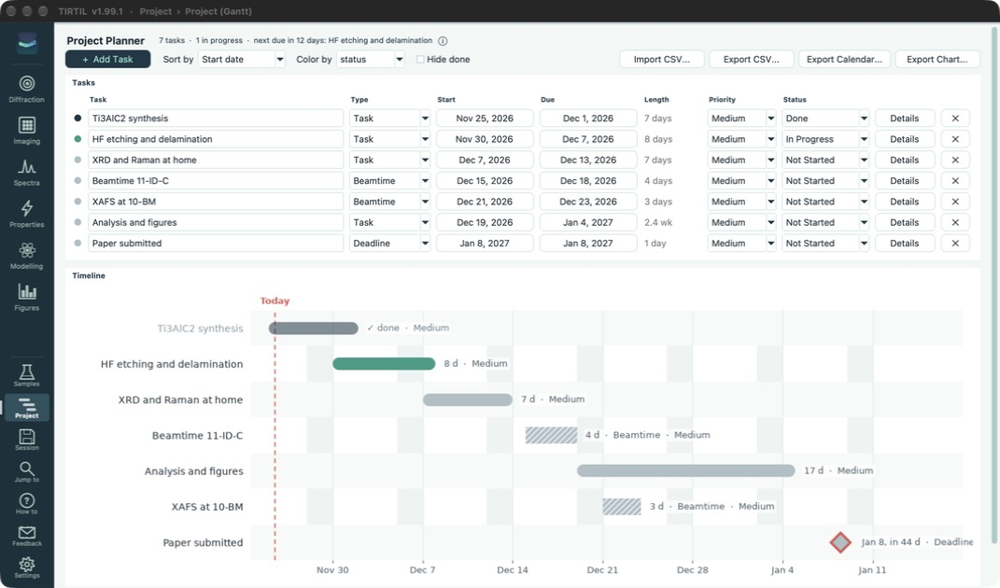
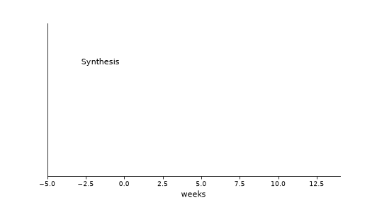

Samples and project
Project
Plan samples, beamtimes and deadlines.

Steps
+ Add TaskAdd tasks, beamtimes, bookings and deadlines.Details: link a data folder, what it depends on, a reminder and a lab notebook.Export Calendar...Export to Outlook, Apple or Google Calendar, with alarms.
How it works

Worked example
Add the beamtime as a booking, make Analysis depend on it, and set a reminder 7 days before the paper deadline.